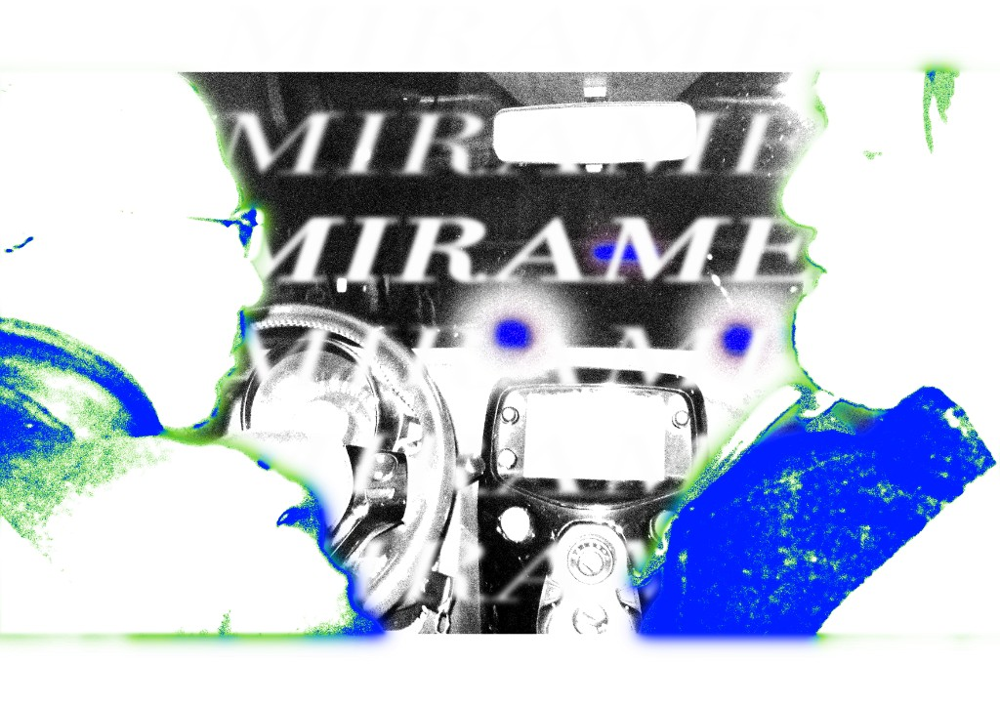

Mirame

Quest'opera si configura come una rielaborazione grafica centrata sul concetto di "sguardo" e voyeurismo, esplicitato dal titolo ripetuto ossessivamente, "MIRAME" (guardami). Il cuore dell'immagine è rappresentato dall'interno di un'automobile — il volante, il cruscotto, lo specchietto retrovisore — che funge da architettura narrativa centrale. Tuttavia, questa realtà è letteralmente "bruciata" o erosa ai margini da esplosioni di colore blu e verde acido, che circondano il centro focale come una cornice in decomposizione. Questa tecnica crea un effetto di visione tunnel o claustrofobica, suggerendo che ciò che stiamo guardando stia svanendo o sia sotto una lente di distorsione percettiva.
La ripetizione del testo, sovrapposto e stratificato, trasforma la parola in un pattern grafico, perdendo il suo significato letterale per diventare puro ritmo visivo. L'immagine sfida l'osservatore: da un lato invita a guardare ("Mirame"), dall'altro rende difficile la visione chiara a causa della sovraesposizione e del contrasto estremo. È un lavoro di decostruzione dell'oggetto quotidiano, dove l'automobile diventa non più un mezzo di trasporto, ma uno spazio psicologico in cui la parola e l'immagine si scontrano in una tensione che invita a riflettere sul desiderio di essere visti e sulla fragilità della percezione stessa.
← Torna ai lavori